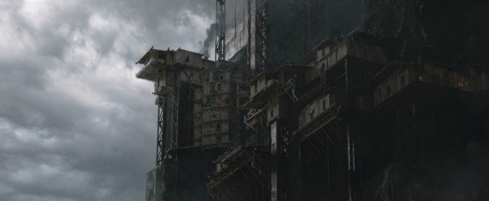

THE NARRATIVE ISN'T LINEAR
A three-act experience across film, web, and audio.
PROJECT STRUCTURE
This project unfolds in three distinct acts, utilizing different formats to create a layered narrative experience. The viewer transitions from passive observation to active participation.
- ACT I: THE FILM (Theatrical/Initial Release) A complete cinematic story designed to stand alone, focusing on themes of observation and isolation. It concludes without traditional credits, presenting only a QR code symbol.
- ACT II: THE INTERACTIVE MYSTERY (Web Platform) Accessed via the QR code after the film's online release. This act requires viewer interaction with the film's timeline (scrubbing, pausing) to uncover clues and solve puzzles within a dedicated web interface. Features minimalist design and integrated binaural audio sections.
- ACT III: THE RESOLUTION (Unlocked Digital Content) The conclusion unlocked by completing Act II. Delivered as a short film (~15-20min) and/or audio experience, providing a final narrative layer that recontextualizes the entire story and the viewer's role within it.
ACT I: ESTABLISHING THE WORLD
The initial film sets the atmospheric tone, drawing inspiration from visually grounded psychological thrillers. The narrative leaves intentional gaps, culminating in the QR code prompt.
TRANSITION: FROM PASSIVE TO ACTIVE
The QR code links to a web platform, initially locked. Access requires the film's online availability, enabling timeline manipulation (pause, rewind, scrub). This interaction is the core mechanic for uncovering hidden information.
This isn’t the real ending. Truth cannot be projected. Truth must be found. Rewind to remember.
Viewer control over time becomes the key to unlocking the narrative's subsequent layers.
ACT II: INTERACTION & DISCOVERY
The web platform features a retro/glitch aesthetic. Progress relies on solving puzzles tied directly to the film's content viewed online. Viewer interaction with the film's timeline (rewinding, pausing, scrubbing) directly impacts discovery. Seemingly stable scenes reveal inconsistencies or hidden data when manipulated non-linearly.
{/* Integrated mechanics explanation */}Key interaction methods include:
- Finding hidden visuals/audio revealed only by scrubbing/pausing at specific moments.
- Entering timecodes or keywords discovered in the film into the web interface.
- Solving rhythm-based or visual puzzles within the interface.
- Navigating minimalist binaural audio sequences (Headphones Required).
This act moves beyond passive viewing, requiring analysis and non-linear engagement with the film's data stream.
ACT III: RECONTEXTUALIZATION
Completion of Act II unlocks the final narrative piece: a concise short film or audio experience. This content provides resolution while fundamentally reframing the events of Act I and the nature of the viewer's interaction in Act II.
The structure implies that the narrative is only truly complete once the viewer has actively engaged and uncovered these hidden layers, making their participation integral to the story's final meaning.
NARRATIVE ARCHITECTURE & AESTHETICS
This project utilizes a Reflective Narrative Structure where the viewer's interaction is a required component. The aesthetic blends grounded, dark cinematography with glitch elements and minimalist digital interfaces. Sound design, particularly binaural audio, is crucial for immersion and clue delivery.
 {/* Caption Removed */}COMMUNITY & LAUNCH STRATEGY
The multi-layered mystery is designed to encourage collaborative solving within online communities (Discord, Reddit, etc.). The launch plan includes unconventional elements to generate discussion:
This project integrates narrative across film, web, and audio, requiring viewer interaction to unlock its complete form. It's an experiment in structurally embedded participation. Engage with the layers to reveal the full picture.